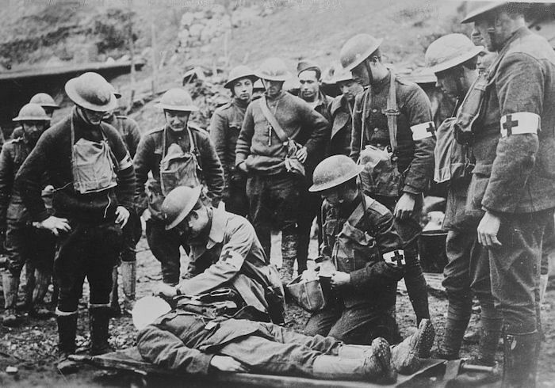

Welcome To ANITS Blood bank !

HISTORY OF BLOOD
- In 1898 , it was discovered that inherited differences in peoples red cells were the cause of many of the incompatibilities found with transfusions.
- During World War I, when human blood was needed for transfusions for wounded soldiers, studies began of how to preserve and transport blood and four blood types were identified.
- Not until World War II, however, did the development of effective preservative solutions make blood transfusions widely and safely available. There have been many advances since then, including the discovery of additional types of blood such as the Rh positive and Rh negative classifications.
- Today, thanks to these advances, full utilization is made of nearly every blood donation. Elements of blood or blood components can be separated by centrifuge.
- Blood is now tested for diseases, and any blood testing positive for a disease is destroyed.
- Millions of times each year in the United States, human blood is required to save the lives of people suffering from accidents and disease. There is currently no substitute for human blood, which makes The Blood Connections role in the health care of our community so vital.